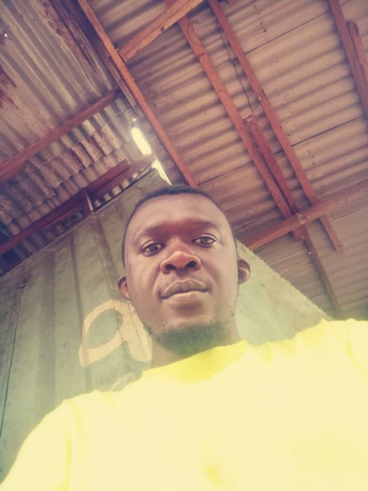

Mentor
UNCLE DANIEL
Setting up hardware and installing and configure software and drivers,
Maintaining and repairing technological equipment (e.g. routers) or peripheral devices
Installing well-functioning LAN/WAN and other networks and manage components (servers, IPs etc.)
Perform regular upgrades to ensure systems remain updated
Contact Me
Maintaining and repairing technological equipment (e.g. routers) or peripheral devices
Installing well-functioning LAN/WAN and other networks and manage components (servers, IPs etc.)
Perform regular upgrades to ensure systems remain updated

Founder
HENRY DUSTIN
I am a web designer with a passion for creating visually appealing and user-friendly websites. Combining my creativity and technical skills, I strive to deliver intuitive online experiences that engage and delight users. With a keen eye for design and a focus on user-centered practices, I aim to create websites that leave a lasting impression.
Contact Me
Mentor
Raymond Global c
As a graphic designer, I thrive on bringing ideas to life through visual storytelling. With a keen eye for aesthetics and a passion for creativity, I am dedicated to crafting captivating designs that resonate with audiences.
My journey in graphic design began with a fascination for art and a desire to communicate messages visually.
READ MORE